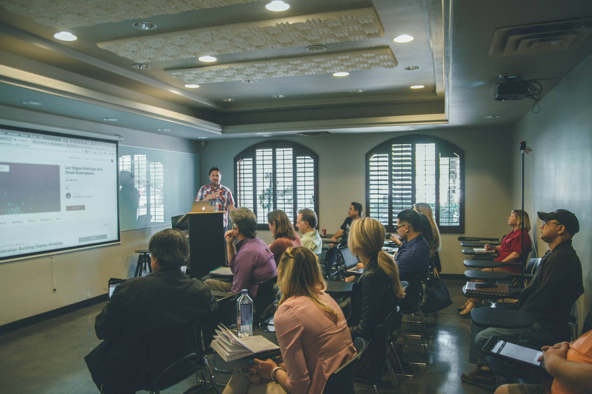

Ops · Web
Atenar Tech
Technology operations, project coordination, client management, website delivery, and business development.
Safiya Mansoori
Operations Manager at Atenar Tech, founder of AromaLuxe, and B.Sc. Computer Science student at Vishwakarma University — building software, data, AI, and brand-led growth.
About
I am a technology enthusiast, entrepreneur, operations manager, and aspiring business leader with interests in software development, data analytics, artificial intelligence, digital marketing, and business management.
Currently pursuing a B.Sc. in Computer Science at Vishwakarma University, Pune, I actively work on real-world technology projects, business ventures, and professional development initiatives. My goal is to build innovative technology solutions, establish successful businesses, empower young entrepreneurs, and contribute to the growing technology ecosystem.
Open to professional networking, technology collaborations, software development projects, business partnerships, and training opportunities.
Experience
Ventures
Brand · Product · Marketing
A creative brand focused on handcrafted candles, chocolates, gifting products, and personalized experiences — from product development and pricing to branding, sales, and customer care.
Ops · Web
Technology operations, project coordination, client management, website delivery, and business development.

Teaching
Practical training in Data Analytics, Advanced Excel, MS Office, and AI productivity tools for professionals and students.

Analytics · AI
Dashboards, machine learning applications, and business systems that turn data into clearer decisions.
Projects
Python · Django · MySQL
End-to-end campus ERP and learning management workflows — role-based access, academic records, and operational modules.
Web Development · AI
School operations platform with AI-assisted features for administration, learning support, and day-to-day management.
Python · Django · MySQL
Business ERP for production and order workflows in a food operations context, focused on inventory and delivery clarity.
Web Application Development
Clinic operations web app covering appointments, records, and day-to-day administrative workflows.
Arduino UNO · IoT
IoT safety prototype for tunnel environments, detecting risk signals and supporting early awareness.
Arduino · IR Sensors
Sensor-driven parking availability system for smarter space detection and occupancy feedback.
Python · Random Forest
Machine learning model to predict wine quality from chemical and sensory feature data.
Python · Hive
Sales analytics pipeline exploring patterns, trends, and decision-ready insights from e-commerce data.
Python · Dash · Plotly
Interactive dashboard visualizing social influence metrics and engagement patterns for clearer marketing decisions.
Explainable Machine Learning
Explainable ML approach to estimate population vulnerability and healthcare demand for planning and response.
Skills & learning
Python · C · C++ · Django · HTML5 · CSS3 · JavaScript · MySQL · Frontend · Web · Database · ERP development
Data analytics · Machine learning · SQL · Advanced Excel · Data visualization · AI · Pandas · Power BI · Python for analysis
Operations · Project management · Team leadership · Entrepreneurship · Business development · Start-up leadership · Strategic planning · Client management · Business analysis
Digital marketing · Social media · Graphic design · Branding · Content strategy · Sales · Customer engagement
Technical training · AI tools training · Public speaking · Communication · Presentation · Knowledge sharing
Achievements
Contact
Open to networking, technology collaborations, software projects, business partnerships, and training opportunities.